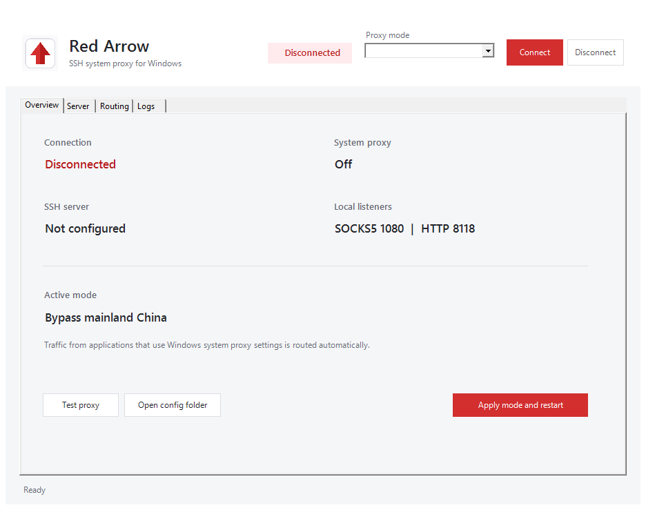
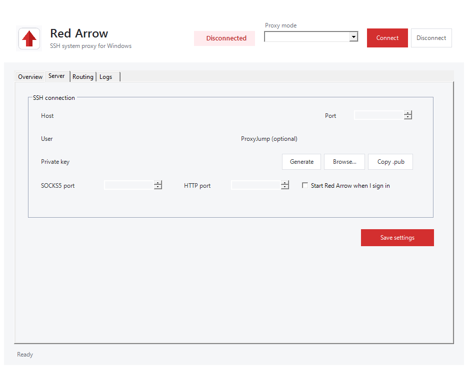
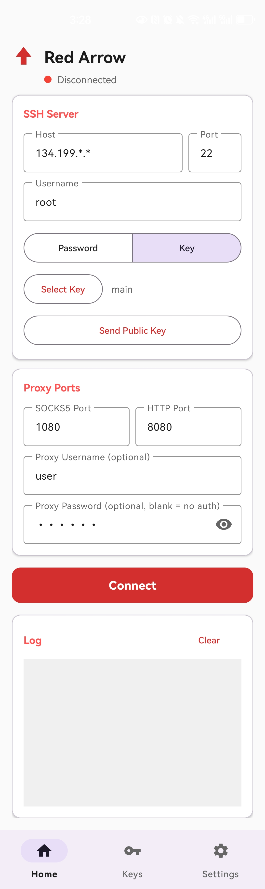
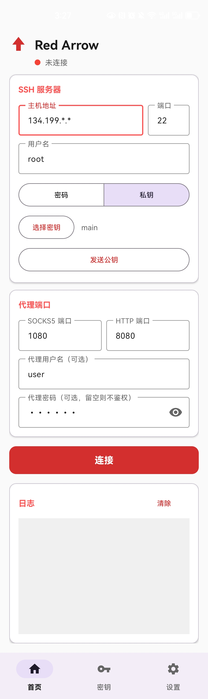
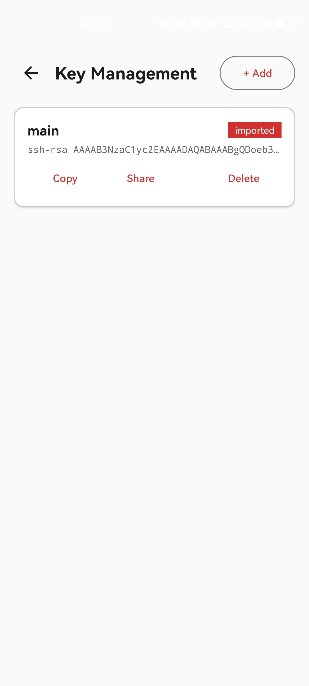
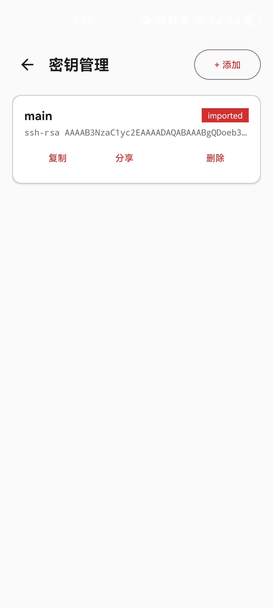
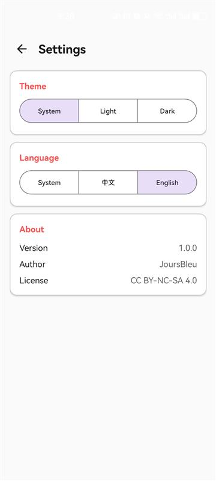
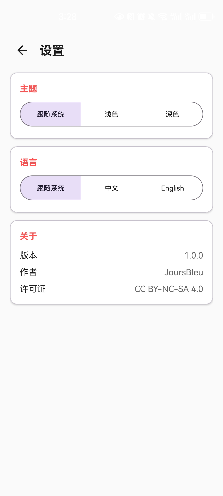

Open-source SSH tunneling with local SOCKS5 and HTTP proxies for Android and Windows.
面向 Android 与 Windows 的开源 SSH 隧道客户端，提供本地 SOCKS5 和 HTTP 代理。
System-proxy modes, mainland China bypass rules, optional ProxyJump, Ed25519 key generation, tray controls, and automatic proxy restoration.
支持系统代理模式、中国大陆分流、可选 ProxyJump、Ed25519 密钥生成、托盘控制和原代理设置恢复。
Password or key authentication, LAN-shareable proxies, key management, traffic counters, connection tracking, and automatic reconnection.
支持密码或密钥认证、局域网共享、密钥管理、流量统计、连接追踪和断线重连。

Overview and proxy modes概览与代理模式

SSH server and key controlsSSH 服务器与密钥管理


Home首页


Keys密钥


Settings设置
Encrypted tunnel through NAT via remote SSH server
通过远程 SSH 服务器建立加密隧道穿透 NAT
SOCKS5 + HTTP on both platforms; Windows can manage the signed-in user's system proxy
双平台提供 SOCKS5 + HTTP；Windows 可自动接管当前用户系统代理
Generate Ed25519 keys, import existing keys, and copy or install public keys
生成 Ed25519 密钥、导入已有私钥，并复制或安装公钥
Exponential backoff reconnection with SSH health monitoring
指数退避自动重连 + SSH 会话健康检查
Windows global, local-only, or mainland-China-bypass modes with custom rules
Windows 支持全局、仅本地及绕过中国大陆模式，并可自定义规则
Android Material Design 3 and a native Windows control center with tray integration
Android Material Design 3 与带托盘集成的 Windows 原生控制中心
Android: Kotlin · Material Design 3 · JSch · Coroutines Windows: Rust · OpenSSH · WinForms · WinINET · Inno Setup